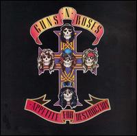
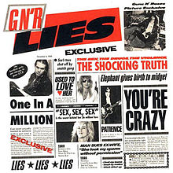
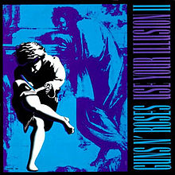
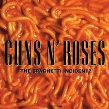
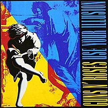
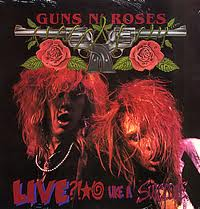
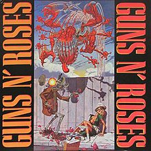
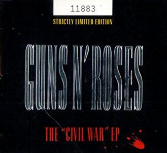

| Albúns de estúdio | |
|---|---|
|  | Appetite for Destruction (1987) |
|  | G N' R Lies (1988) |
 |
Use Your Illusion I (1991) |
|  | Use Your Illusion II (1991) |
|  | The Spaghetti Incident? (1993) |
| Chinese Democracy (2008) | |
| Álbuns ao vivo | |
|---|---|
 |
Live Era: '87-'93 (1999) |
| Coletâneas | |
|---|---|
|  | Use Your Illusion (1998) |
 |
Greatest Hits (2004) |
| EP's de estúdio | |
|---|---|
|  | Live ?!*@ Like a Suicide (1986) |
| EP's de compilação | |
|---|---|
|  | Guns N' Roses - Live From The Jungle (1987) |
|  | The "Civil War" EP (1993) |
| Hard Skool (2022) | |